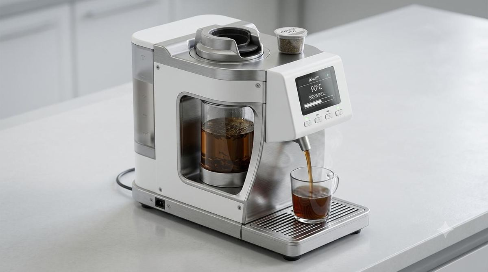
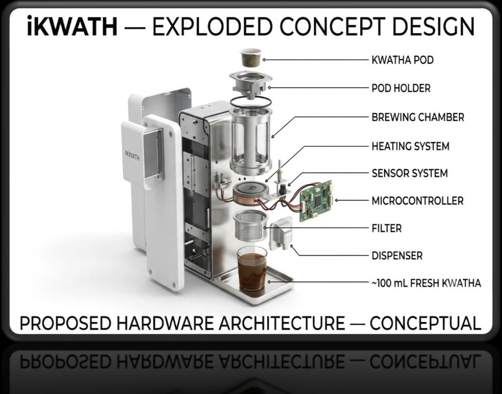
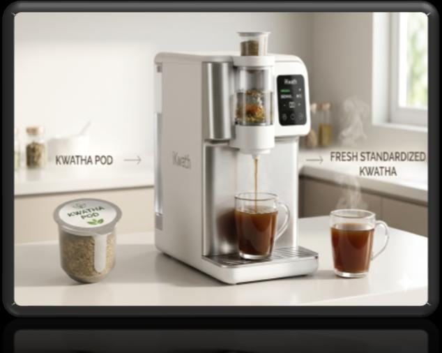
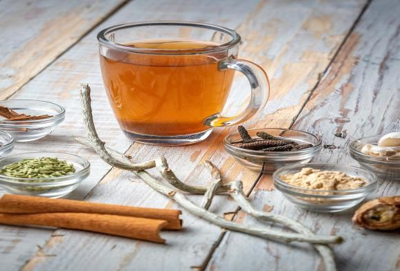
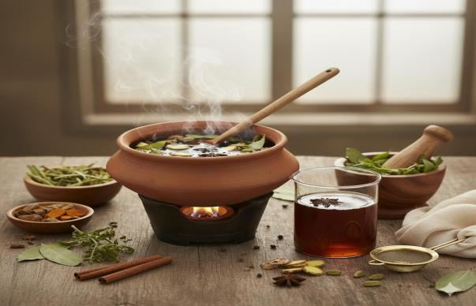

Manual and laborious
The right amount of powder, water, heat and reduction is difficult to hold steady by hand.
iKwath is a countertop kwatha (kadha) maker. Load a pod, and the machine brews, reduces to a quarter and filters the decoction for you. Same decoction, without standing over the stove.

The right amount of powder, water, heat and reduction is difficult to hold steady by hand.
Traditional preparation needs a long, slow reduction step, which limits how convenient it is.
Small changes in the process can shift dose consistency and extractive yield.
Press play or drag the slider to step through the iKwath process: 400 mL of water goes in, and about 100 mL of kwatha comes out.
Illustration of the intended process. It shows the design targets, not measured machine data.
A sensor system watches the brew and a microcontroller runs the sequence, so each pod follows the same path.

Proposed hardware architecture, conceptual
Keeps heating in the controlled range.
Tracks the water and the reduction.
Supports consistent doses.
Controls heating, timing and process sequence.
Anti-boil-over and dry-run protection.

Each pod holds standardized coarse powder for a single dose. It also defines the formulation-specific parameters, so changing the formulation means changing the pod.
Each challenge in making kwatha maps to a control the machine already has.
| Challenge | How iKwath handles it |
|---|---|
| Slow preparation | Controlled brewing and reduction. |
| Manual variation | Formulation-specific pod parameters. |
| Inconsistent process | Temperature, weight and extract-density monitoring. |
| Cleaning and safety | Safety controls and a removable, dishwasher-safe chamber and filter. |
Compact countertop appliance.
Standardized coarse powder.
Swap the pod, change the formulation.
Removable chamber and filter.
Built for validation against AFI and API requirements.


One pod, one fresh standardized dose.
Controlled temperature, volume and endpoint.
Fresh, warm decoction when you need it.
Designed to preserve the required decoction quality and extractive yield.
Single-dose coarse powder with formulation-specific parameters.
Compact countertop preparation.
Supports standardized preparation in Ayurvedic settings.